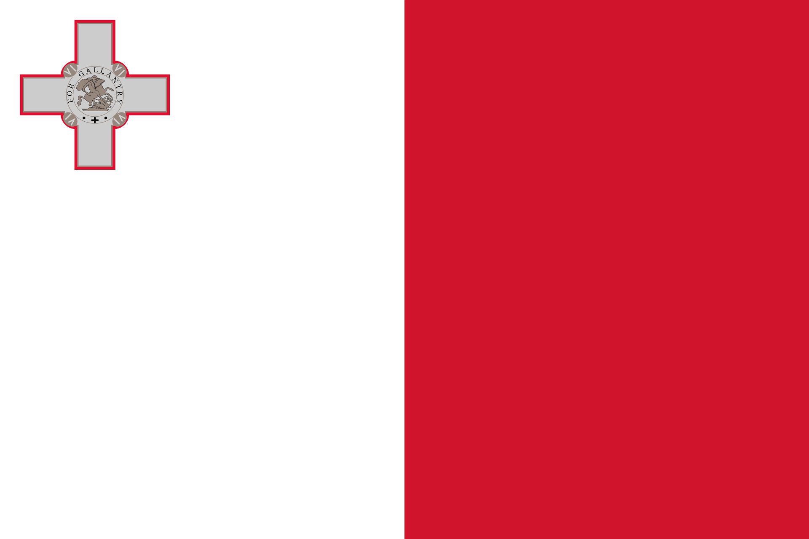

Malta – Inselstaat im Mittelmeer
Malta liegt südlich von Italien und besteht aus mehreren Inseln.
Die Hauptstadt ist Valletta.
Geografie und Klima
Malta ist klein und felsig.
Das Klima ist mediterran.
Geschichte und Kultur
Viele Kulturen haben Malta geprägt, darunter Römer und Briten.
Sprache und Regionen
Die Amtssprachen sind Maltesisch und Englisch.
Wirtschaft und Tourismus
Tourismus und Dienstleistungen sind sehr wichtig.
Fazit
Malta verbindet Geschichte, Sonne und Meer.